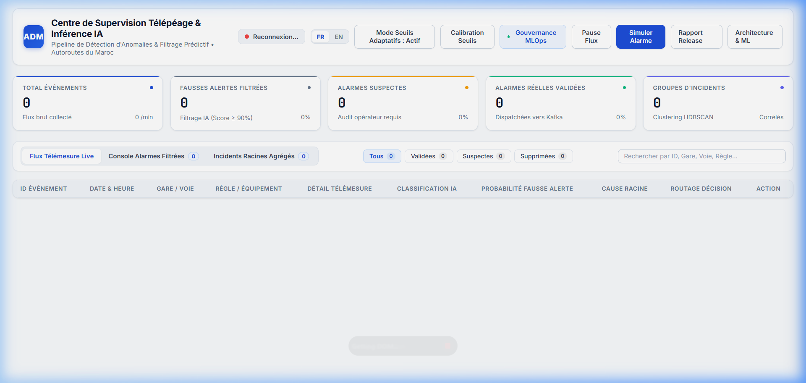

Production • ADM
-35% fausses alertes

ADM 2026 — Plateforme Temps Réel de Détection d'Anomalies Péages
Architecture microservices automatisée pour Autoroutes du Maroc (ADM) filtrant 15 000+ événements capteurs quotidiens en temps réel via XGBoost, clustering HDBSCAN, inférence SHAP et Spring Boot Resilience4j.